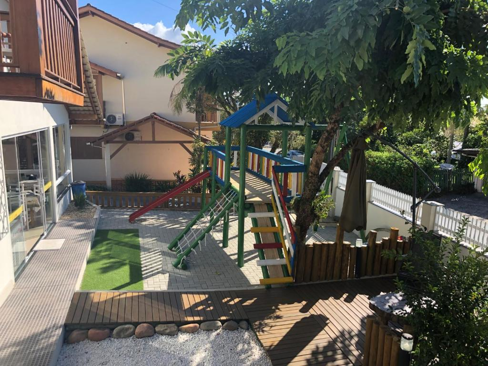
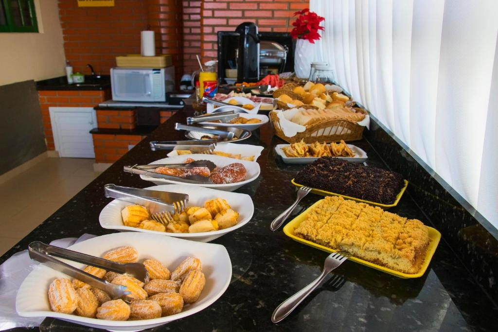
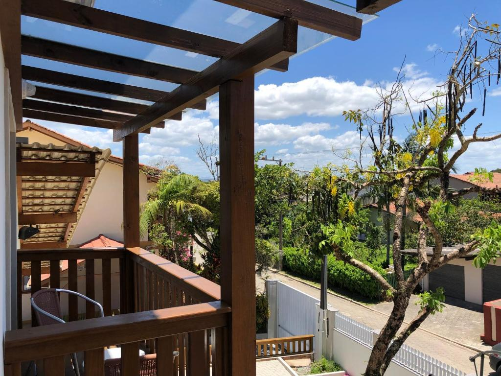
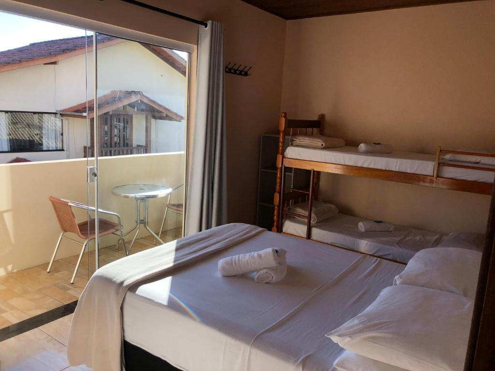
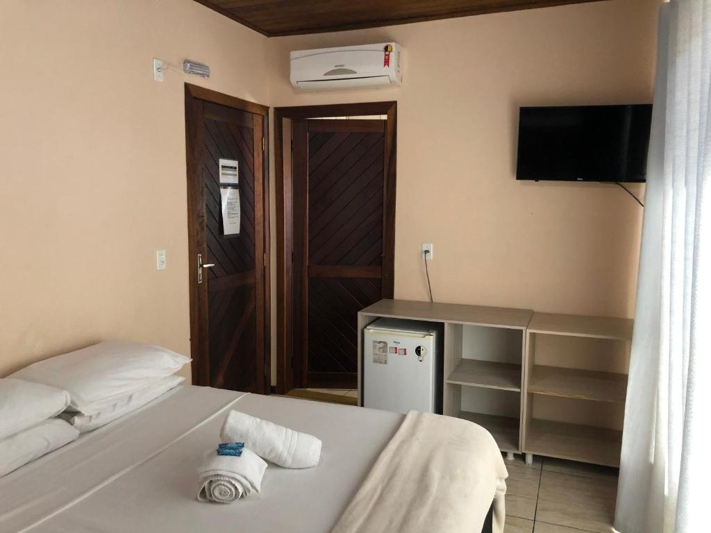
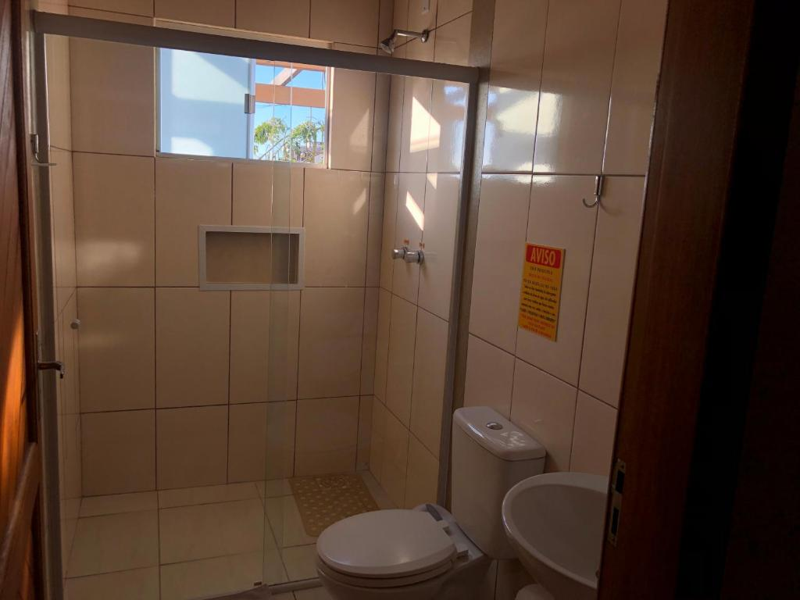
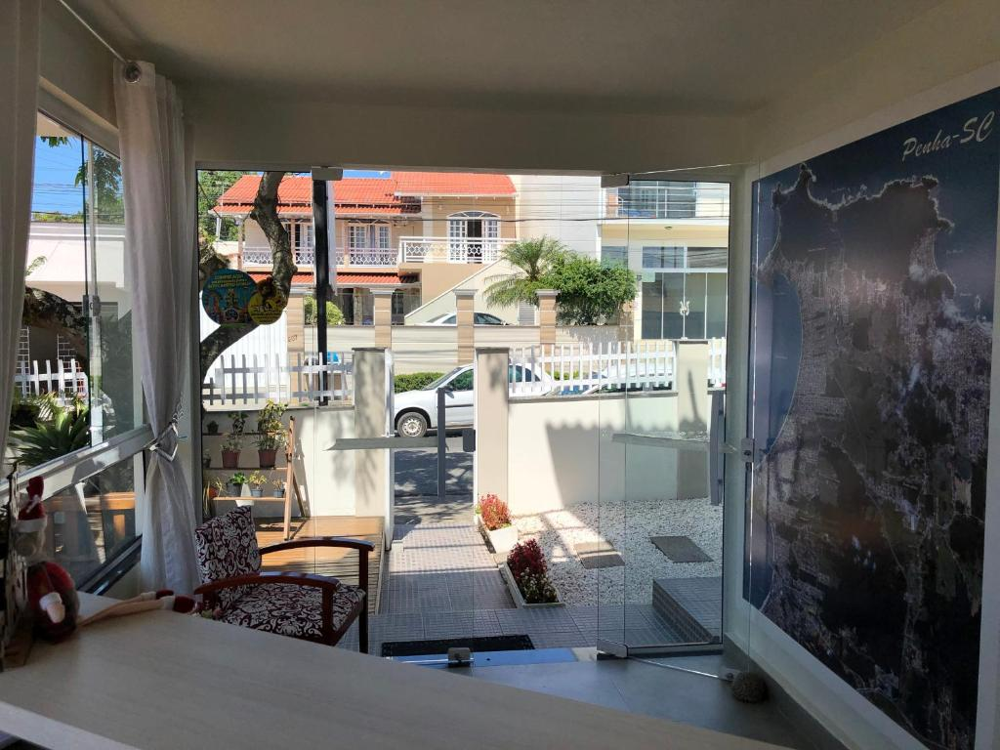
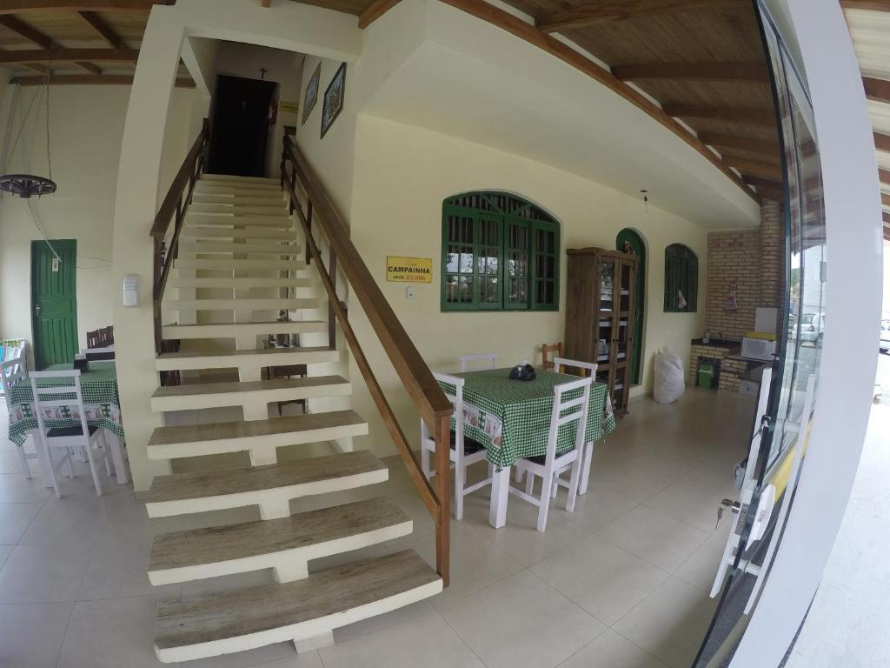
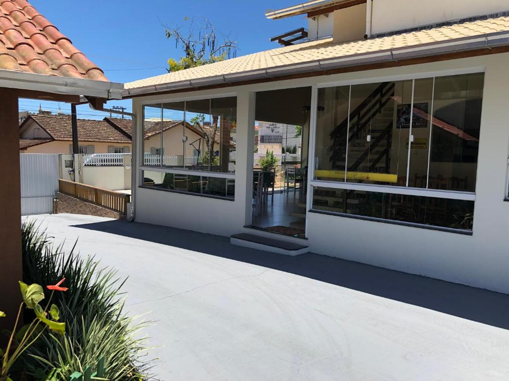

Esta acomodação fica a 4 minutos a pé da praia. Localizada a 1,5 km do
Beto Carrero World (parque temático), a Pousada Rosália oferece acomodações em Penha. O WiFi é
gratuito e o café da manhã de cortesia é servido diariamente.
Os quartos do hotel dispõem de uma TV de tela plana e banheiro privativo.
Na Pousada Rosalia, você pode usufruir de um jardim e lojas. Além disso, é possível comprar bilhetes
para o Parque Beto Carrero no local.
O Aeroporto Internacional de Navegantes - Ministro Victor Konder fica a 11,5 km da propriedade. Para
sua comodidade, o serviço de translado pode ser providenciado por um custo adicional.
Esta é a parte de Penha de que os nossos hóspedes mais gostam, de acordo com avaliações
independentes.
Casais particularmente gostam da localização — eles deram nota 9,5 para viagem a dois.
Proximidades da pousada
Praia do trapiche - 400m
Praia grande - 1,5km
Balneario Camboriu - 30km
Florianopolis - 100km
Blumenau - 55km
Itajai - 25km
Pomerode - 70km
Fotos









Informações para contato
Telefone: (47) 3345-1821
Whatsapp: (47) 98805-9849
E-mail: pousadarosalia@hotmail.com
Endereço: Rua Inácio Francisco de Souza, número 208